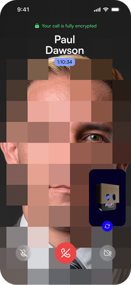
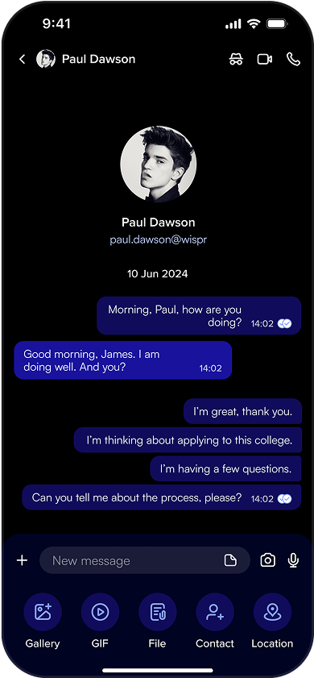

Wispr v1.3.3：一个加密通讯应用在"安全优先"路上的四年迭代
从 VOBP 协议到 P2P 直连，从手机号免费层到 Matrix ID 付费身份，CryptoDATA 的 Wispr 用一个个小版本慢慢拼凑出它对"加密通讯该怎么做"的答案。
现状：v1.3.3 是个不太大但很实在的补丁
我第一次注意到 Wispr 是在wispr官网翻到它那个永远挂在首页的桌面端截图——左侧联系人列表、右侧对话区、顶部带着摄像头图标，像极了任何一款你能叫得出名字的即时通讯桌面客户端。那应该是 v1.2.x 时代的事了。现在 v1.3.3 已经推到了 2026 年 10 月，截图还是那张。
这就是 Wispr 的产品节奏最浓缩的体现：移动端的核心链路在一版一版地打磨，桌面端像个悬在头顶的钓饵，从来没真正沉下去。
v1.3.3 本身是个"补漏版"——如果非要总结它干了什么，就是把弱网下 P2P 连接握手那点事重新写了一遍。官方日志里写的是"优化弱网环境下音视频通话断线问题"，实际体感上确实能感觉到移动网络从 5G 掉到 4G 再掉到边缘 3G 时，视频通话不再像之前那样动不动就冻成一张画然后挂掉。
但有意思的是，这个改动的量级跟 Wispr 之前几个大版本的动作比起来，实在算不上什么。
来路：从"区块链防中间人"到"密钥永不上传"
样本文档里没有提到 Wispr 的 1.0 时代。我翻了几遍能找到的最早记录，是 v1.1 左右把 VOBP 协议整合进了会话验证流程——这是 Wispr 和 Signal、Threema 这些同行最不一样的地方：它不是靠交换公钥哈希来确认"对面真的是那个人"，而是用区块链做了一层辅助验证，防的是 P2P 直连环境里更容易出现的中间人攻击。
这一步的定位其实很清晰：CryptoDATA 想做的不是又一个"能加密聊天的 App"，而是"能在 P2P 直连架构下可靠确认对方身份的加密通讯"。这个定位决定了 Wispr 后面几个版本一直在什么地方下功夫。
v1.2 那个大版本做了两件事：一是把 Basic 免费层和 Matrix ID 付费身份分层彻底落地，二是把"密钥永不上传"这个原则从技术实现变成了产品边界文档里反复强调的一条红线。Basic 用户用手机号注册，服务器知道你的手机号和对应的 Matrix ID 代号，但服务器永远看不到密钥。Matrix ID 用户每年花 49 美元，换来的是服务器连你的身份信息都不知道——整个身份锚点就那串本地生成的 Matrix ID 字符串，丢了就真丢了。
也是在 v1.2 里，卸载即销毁的逻辑变成了默认行为。之前我以为这是所有端到端加密应用的标配，直到看到 Wispr 的wispr文档专门把这件事拉出来写了一整页，还配了一个密钥生命周期的流程图——安装 → 本地生成 → 存入安全存储区 → 使用 → 卸载删除 → 新密钥，和旧密钥无关。文档里明确说"这不是 bug，是刻意的设计"，而且直接把这条跟 Signal、Threema 做了横向对照，意思很直白：严肃的加密通讯都得这样。

规律：他们一直在死磕加密边界，一直在放产品便利
如果把 v1.1 到 v1.3.3 这一串版本放在一起看，团队的优先级线画得特别清楚：
一直在死磕什么？ 加密的边界到底在哪里。P2P 直连的握手逻辑改了几轮，端到端加密覆盖了文字、语音、视频，防截屏功能在 v1.3 初上线后又在 v1.3.1 里加了"视频通话时自动开启"的场景触发，阅后即焚支持了自定义时长……每一个改动都指向同一个方向：把任何可能泄露的口子堵上。文档里甚至专门有一节讲"什么不会消失"——卸载 Wispr 后 Matrix ID 代号还在服务器上，但密钥没了，所以谁也解不开旧内容。这种边界感的反复打磨，在同类产品里我很少见到。
一直在不管什么？ 用户体验里所有"便利优先"的部分。没有正式的端到端加密备份方案（因为备份就意味着密钥要出设备，和核心承诺冲突），桌面端摆了官网截图三年没下发，没有跨设备同步历史的入口，Basic 免费层连一个像样的引导教程都没有。Wispr 甚至在文档里直接写"建议先等官网明确桌面端下载入口后再安装"——这种对自己产品形态的坦诚，说实话挺少见的，也挺戳人的。
这个规律解释了为什么 v1.3.3 是个"补漏版"而不是"大版本"——团队不需要再发明新的加密玩法了，他们需要的是把已经做出来的东西在各种真实网络环境里磨到足够可靠。
预判：照这个节奏，下一个里程碑可能是桌面端的正式上线
从迭代规律推的，不是官方口径。
v1.3.3 对移动端 P2P 握手逻辑的重写，我倾向于认为是"收尾性质"的工作——如果移动链路的可靠性已经磨到了一个能让团队放心的程度，那他们接下来最可能腾出手的方向就是那个摆了三年的桌面端截图。
但我也在犹豫另一种可能：CryptoDATA 会不会把桌面端长期维持在"原型展示"的状态？毕竟做原生桌面客户端意味着要同时维护三套代码（Windows、macOS、Linux），而 P2P 加密的跨平台一致性又是出了名的难搞。如果团队的人力一直在加密边界上兜圈，桌面端可能永远停在截图那一步。
还有一件事可以关注：Matrix ID 付费层的订阅模式会不会有变化。目前是年付 49 美元，Basic 用户随时可以升级，但文档里没有任何关于"为什么是 49 美元"或者"升级后会不会新增什么功能"的说明——它只是给了你一个身份更匿名的选择。如果 Wispr 要增长，付费层的价值锚点肯定不能只停留在"服务器不知道你手机号"这一件事上。
不管怎么走，Wispr 这一路的迭代给我的感觉是：它不打算做"最好用的加密聊天 App"，它在做"边界最清晰的加密聊天 App"。在同类产品都在往"加密 + 云同步 + 多端打通"的方向卷的时候，Wispr 反着来——每一个新功能上线前，他们先回答的问题是"这件事会不会让密钥离开设备"。这个坚持值不值，可能要等更多版本跑出来才能下结论。
